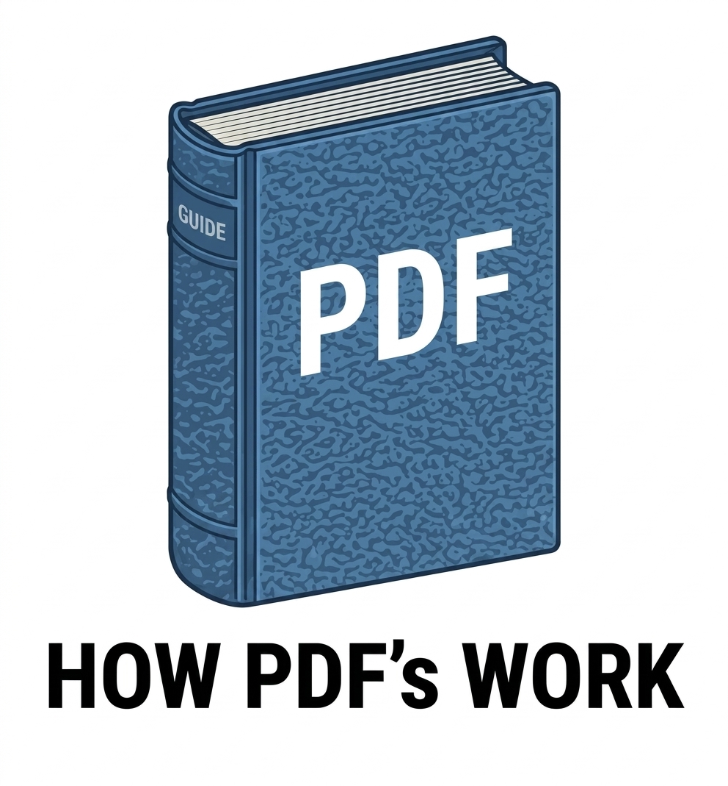

A practical guide for construction, design, and document management
At its core, a PDF is a container. It wraps together text, vector graphics, raster images, fonts, and metadata into a single file. Unlike a Word document, a PDF is designed to be read-only and device-independent. It doesn't rely on the fonts installed on your computer, and it preserves exact positioning of every element on the page.
PDFs use a coordinate system measured in points (1 point = 1/72 inch). This is why PDFs are naturally print-friendly — the math maps directly to physical paper sizes.
Not all PDFs are created equal. Depending on how they were made, they behave very differently when you try to edit, search, or extract data from them. Understanding these four types is critical for choosing the right tool for the job.
Created directly from AutoCAD, Revit, Vectorworks, or other design software. Contains live vector lines, arcs, text, and embedded fonts. Text is selectable and searchable. File sizes are small. Scale data is preserved. This is the gold standard for construction.
Examples: AutoCAD export, Revit sheet export, Vectorworks PDF, SolidWorks drawing.
The most common type in the real world. Contains a mix of vector linework, live text, and raster images on the same page. Construction PDFs are almost always hybrids — vector lines for the drawing, raster images for photos or rendered details, and live text for dimensions and labels. Still measurable and searchable in most cases.
Examples: Architectural drawings with rendered elevations, engineering reports with embedded photos, permit sets with scanned detail sheets mixed with CAD linework.
An image-based PDF that has been run through Optical Character Recognition (OCR). The visible page is still a photo, but a hidden text layer sits underneath. You can search and copy text, but the underlying image limits precision when marking up or measuring. No vector geometry to snap to.
Examples: Scanned permit documents with OCR applied, archived drawings processed through Adobe Acrobat or ABBYY FineReader, old paper plans digitized and text-recognized.
A PDF that is essentially a photo of a page. Each page is one big image (usually JPEG or TIFF compressed). No selectable text, no vector lines, no searchability, no embedded scale data. File sizes are large. Everything must be calibrated manually.
Examples: Paper plans scanned on a copier, old drawings digitized with a phone camera, signed documents scanned to PDF, faxed pages saved as PDF.
| Property | Vector | Raster |
|---|---|---|
| What it is | Mathematical paths, lines, curves, and shapes | A grid of colored pixels (tiny dots) |
| Zoom behavior | Stays perfectly sharp at any zoom level | Gets blurry or pixelated when zoomed in |
| File size | Very small (just math equations) | Grows rapidly with resolution and color depth |
| Editability | Individual lines and objects can be selected and edited | Edits affect pixels; erasing leaves holes |
| Scale / Measurement | Exact real-world dimensions embedded in the file | Only pixel dimensions; scale must be calibrated manually |
| Best for | Blueprints, logos, technical drawings, CAD output | Photographs, scanned documents, textures |
Think of a vector file as a recipe: "Draw a line from point A to point B, 3 units thick, colored blue." The computer redraws it perfectly every time, at any size. A raster file is like a photograph of that line — it only looks good at the size it was taken. Blow it up, and you see the individual pixels.
Both JPG and PNG are raster image formats, but they solve different problems. Understanding when to use each saves file space and preserves quality.
| Feature | JPG / JPEG | PNG |
|---|---|---|
| Compression | Lossy — discards data to shrink file size | Lossless — preserves every pixel exactly |
| File size | Small to medium (adjustable quality) | Large (no quality slider) |
| Transparency | ❌ No transparency support | ✅ Full transparency support |
| Best for | Photographs, complex images with gradients | Logos, diagrams, screenshots, images needing transparency |
| Text / line quality | Can blur sharp edges at high compression | Keeps text and lines razor-sharp |
| Color depth | 16.7 million colors (24-bit) | 16.7 million colors + alpha channel (32-bit) |
Resolution is the density of pixels or dots in an image. It's measured in DPI (dots per inch) or PPI (pixels per inch). The same image at different resolutions can look identical on screen but wildly different when printed.
DPI tells you how many dots (or pixels) fit into one linear inch. A 100×100 pixel image at 100 DPI prints at exactly 1 inch square. At 200 DPI, the same 100 pixels print at 0.5 inches square — smaller, but sharper.
| Context | Typical DPI | Notes |
|---|---|---|
| Computer screen | 72–96 DPI | Most monitors display at 96 PPI. Retina/4K screens are higher but software scales them. |
| Office printer | 150–300 DPI | 300 DPI is the standard for "laser quality" text and graphics. |
| Large-format plotter | 300–600 DPI | D-size (24×36) and E-size (36×48) construction plans. |
| High-end photo print | 300–600 DPI | Magazine and photo quality. Diminishing returns above 600 DPI. |
| Scanning for archive | 200–400 DPI | 200 DPI is readable; 400 DPI captures fine pencil marks and erasures. |
| Scanning for OCR | 300 DPI minimum | OCR accuracy drops significantly below 300 DPI. |
| Precision markup / takeoff | 288–1152 DPI | 1152 DPI = 16 pixels per PDF point. Eliminates rounding errors in measurements. |
File size scales with the square of resolution. Doubling the DPI quadruples the pixel count and roughly quadruples the file size.
PDFs internally use 72 points per inch, but this is a unit of measurement, not a resolution limit. A PDF can contain vector art that is infinitely sharp at any zoom, and raster images at any embedded resolution. The 72 PPI number only matters when converting PDF pages to raster images (like exporting to PNG or JPG) — at that point, you choose the output DPI.
Construction documents have unique requirements that don't apply to office documents or photos. Understanding these saves time, money, and mistakes in the field.
| Size | Dimensions | Common Use |
|---|---|---|
| Letter (ANSI A) | 8.5 × 11" | Specs, schedules, detail sheets |
| Tabloid (ANSI B) | 11 × 17" | Small floor plans, sections |
| D-Size (ANSI D) | 22 × 34" or 24 × 36" | Standard construction floor plans |
| E-Size (ANSI E) | 34 × 44" or 36 × 48" | Site plans, complex elevations, full sets |
Construction PDFs exported from CAD software (AutoCAD, Revit, Vectorworks) contain embedded scale data. This means the PDF knows that 1 inch on the page equals 1 foot, 10 feet, or 50 feet in the real world. Tools like DZ Markup can read this data to draw dimension lines that snap to true scale — a feature impossible with scanned or raster-only PDFs.
A non-flattened PDF preserves layers, annotations, and scale metadata — this is what you want for markup and takeoff. A flattened PDF merges everything into a single image layer. It looks the same visually but loses the underlying data. Always request non-flattened PDFs from your architect or engineer.
If you must scan paper plans, follow these rules:
Jobsite photos (JPG) and construction drawings (PDF) serve different purposes but often need to live together in the same markup workflow. Photos show existing conditions; drawings show intent. A good markup tool handles both — DZ Markup accepts PDFs for scale-accurate dimensioning and JPG/PNG photos for field markups and punch lists.
| Task | Best Format | Why |
|---|---|---|
| Sending blueprints to subs | PDF (vector, non-flattened) | Small file, sharp at any zoom, measurable |
| Jobsite photo documentation | JPG (high quality) | Small file, good for complex real-world scenes |
| Screenshot of software | PNG | Sharp text, no compression artifacts |
| Logo or watermark overlay | PNG (transparent) | Transparency blends over any background |
| Archiving paper drawings | PNG or TIFF at 300+ DPI | Lossless, no degradation over time |
| Emailing quick markups | PDF or PNG | Preserves line quality, universally readable |
| Large-format plotter output | PDF (vector) | Plotter renders vectors at full device resolution |
PDFs are the lingua franca of construction because they preserve intent across every device. Vector PDFs are measurable and sharp; raster PDFs are photos that need calibration. JPG is for photos, PNG is for precision. Resolution matters when printing or scanning, but vector art is resolution-independent. For construction work, always prefer vector-based, non-flattened PDFs exported directly from CAD — they carry the scale data that makes digital markup and takeoff possible.
← Back to PDF Manager